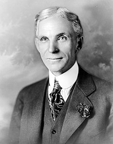

|  |
Henry Ford
Born:July 30, 1863
Greenfield Township, Michigan, U.S
Died: April 7, 1947 (aged 83)
Fair Lane, Dearborn, Michigan, U.S
known for:Founding and leading Ford Motor Company
Spouse(s):Clara Jane Bryant (m. 1888)
Children:Edsel Ford
Parent(s):William FordMary Ford
Signature:

|
Early life
Henry Ford was born July 30, 1863, on a farm in Greenfield Township, Michigan.His father, William Ford (1826–1905), was born in County Cork, Ireland, to a family which emigrated from Somerset, England in the 16th century."The history of Ford in Ireland". Archived from the original on November 19, 2017. His mother, Mary Ford (née Litogot; 1839–1876), was born in Michigan as the youngest child of Belgian immigrants; her parents died when she was a child and she was adopted by neighbors, the O'Herns. Henry Ford's siblings were Margaret Ford (1867–1938); Jane Ford (c. 1868–1945); William Ford (1871–1917) and Robert Ford (1873–1934).
His father gave him a pocket watch in his early teens. At 15, Ford dismantled and reassembled the timepieces of friends and neighbors dozens of times, gaining the reputation of a watch repairman.At twenty, Ford walked four miles to their Episcopal church every Sunday.
Ford was devastated when his mother died in 1876. His father expected him to eventually take over the family farm, but he despised farm work. He later wrote, "I never had any particular love for the farm—it was the mother on the farm I loved"
Political Party
| Year |
Political Party |
| (before 1918) |
Democratic |
| (after 1918) |
Republican |
Career
 |
In 1891, Ford became an engineer with the Edison Illuminating Company of Detroit. After his promotion to Chief Engineer in 1893, he had enough time and money to devote attention to his personal experiments on gasoline engines. These experiments culminated in 1896 with the completion of a self-propelled vehicle which he named the Ford Quadricycle. He test-drove it on June 4. After various test drives, Ford brainstormed ways to improve the Quadricycle.
Also in 1896, Ford attended a meeting of Edison executives, where he was introduced to Thomas Edison. Edison approved of Ford's automobile experimentation. Encouraged by Edison, Ford designed and built a second vehicle, completing it in 1898.[10] Backed by the capital of Detroit lumber baron William H. Murphy, Ford resigned from the Edison Company and founded the Detroit Automobile Company on August 5, 1899.[10] However, the automobiles produced were of a lower quality and higher price than Ford wanted. Ultimately, the company was not successful and was dissolved in January 1901. | \
Ford Motor Company
In response, Malcomson brought in another group of investors and convinced the Dodge Brothers to accept a portion of the new company. Ford & Malcomson was reincorporated as the Ford Motor Company on June 16, 1903,[10] with $28,000 capital. The original investors included Ford and Malcomson, the Dodge brothers, Malcomson's uncle John S. Gray, Malcolmson's secretary James Couzens, and two of Malcomson's lawyers, John W. Anderson and Horace Rackham. Ford then demonstrated a newly designed car on the ice of Lake St. Clair, driving 1 mile (1.6 km) in 39.4 seconds and setting a new land speed record at 91.3 miles per hour (146.9 kilometres per hour). Convinced by this success, the race driver Barney Oldfield, who named this new Ford model "999" in honor of the fastest locomotive of the day, took the car around the country, making the Ford brand known throughout the United States. Ford also was one of the early backers of the Indianapolis 500.
Inovations and Other Details